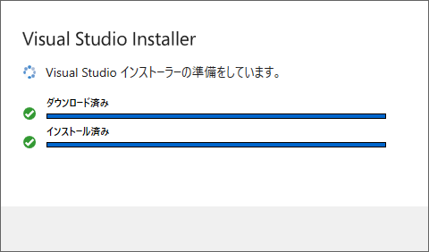

統合開発環境の準備
統合開発環境とはプログラムを記述してコンパイル、デバッグ作業などを行える環境を差します。当Webサイトで扱う「Visual Studio 2022 Community」も統合開発環境です。 開発環境のインストールVisual Studio 2022 Communityをインストールしていきます。インストーラーをダウンロードしますので、Webブラウザを開きます。 検索ページを開き、「Visual Studio」と検索します。 検索結果から「Microsoft Visual Studio」のWebサイトに移動します。 Visual Studio 2022 Communityをダウンロードします。 【注意】ProfessionalやEnterpriseではありません。 この２つは有償版となります。 「VisualStudioSetup.exe」がダウンロードできるので、 ダウンロードが終わってからダブルクリックします。  次の画面が表示された場合は、「はい」を押します。 次の画面が表示されるので、「続行(C)」を押します。 次の画面が表示されたら、しばらく待ちます。  しばらく待つと次の画面が表示されます。 「C++ によるデスクトップ開発」をクリックしてチェックを入れて、 「インストール(I)」を押します。 |
IT入門・研究室 | C言語入門
|
当Webサイトに記載されている内容は、筆者が独自に調査・研究した内容をまとめています。 そのため、記載されている内容によって、 いかなる損害が発生したとしても、筆者は責任を負いかねますのでご了承ください。 |